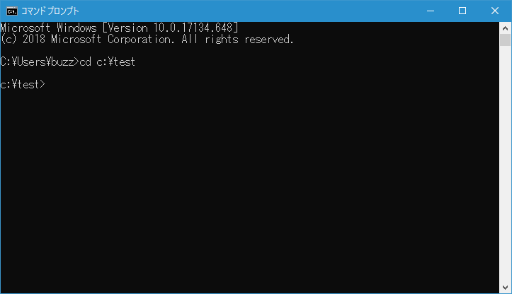

ディレクトリとドライブ
コマンドプロンプトはファイルのコピーを行ったり、ディレクトリを作成したり、プログラムを実行したりする場合に使われます。これらのことを行うとした場合、ドライブとディレクトリという考え方を理解しておく必要があります。そこでここでは Windows におけるディレクトリとドライブについて簡単に解説します。
ドライブとは
コンピュータにおいてプログラムやデータを記憶するために使われるのはハードディスクと呼ばれるものです。作成した文書や画像などのデータだけではなくOSであるWindows自体もハードディスクにデータとして格納されています。ハードディスクそのものは物理ドライブと呼ばれます。
ハードディスク全体を一つの大きな箱として使ってもいいのですが、巨大なハードディスクの中に全てのデータを入れていくと管理がしにくい場合があります。そこでハードディスクそのものは1つですが、論理的にそれを2つ程度に分けてあたかも別々の箱があるように扱うことができます。この時、論理的に分けられた領域をそれぞれ論理ドライブといいそれぞれにドライブ名が割り当てられます。
最近のWindows PCだとCドライブだけのものと、CドライブとDドライブに分けている場合のどちらかです。
ディレクトリとは
1つのドライブの中に様々なファイルを格納していきことになりますが、全ての同じように格納していっては管理が大変です。そこでドライブの中をさらに細かく分けて使うためにディレクトリというものを使います。Windows上では通常フォルダと呼んでいますが、コマンドプロンプトで扱う場合はディレクトリと呼ぶのが一般的です。
ディレクトリはデータを入れておく箱のようなものです。まずドライブ全体を現す大きな箱を用意します。これをルートディレクトリといいます。ディレクトリを使わない場合はこの箱の中に全てのファイルを入れていくことになります。
そこでルートディレクトリの箱の中に小さい箱をいくつか入れて目的に応じてファイルを分けて入れておけるようにします。この箱のことをディレクトリといいます。画像用のディレクトリやプログラム用のディレクトリを作っておけば、箱を見れば中に何が入っているのかすぐに分かります。
ルートディレクトリの中に全てのファイルを格納した場合：
ドライブの中に2つのディレクトリを作成した場合：
上記では「文書ディレクトリ」と「画像ディレクトリ」を作り、関連するファイルをこのディレクトリの中に格納しました。
ディレクトリの中にはさらにディレクトリを追加してより細かく分類することも可能です。
上記では「文書ディレクトリ」の中に「社内ディレクトリ」と「社外ディレクトリ」を作り、より細かくファイルを分類して格納しました。
一番外側のディレクトリはルートディレクトリですが、その中に含まれるディレクトリはルートディレクトリから見ると子ディレクトリとなります。逆にルートディレクトリの中のディレクトリから見た場合ルートディレクトリは親ディレクトリとなります。ディレクトリはさらに細かく追加していくことができますので順に親子の関係となります。
ハードディスクには複数のドライブが存在する場合がありますが、ドライブ毎にルートディレクトリは存在することになります。
この場合、大きな箱が2つあり、それぞれの箱の中にはディレクトリという名の箱が入っているということになります。
コマンドプロンプトにおけるドライブとディレクトリ
コマンドプロンプトが起動すると、現在位置が設定されます。この位置とはディレクトリのことで、どこかのドライブの中のディレクリに現在位置が設定されます。コマンドプロンプトの現在位置のディレクトリのことをカレントディレクトリと呼ぶこともあります。
コマンドプロンプトは、起動した時のディレクトリから目的のディレクトリに移動し、そのディレクトリの中に格納されているファイルを対象としてコマンドを実行したりプログラムを実行したりします。
実際に試してみます。コマンドプロンプトを起動して下さい。
コマンドプロンプトを起動した時に最初どのディレクトリに居るのかはOSなどによっても異なりますが、今回は次のように画面に表示されたとします。
C:\Users\buzz>
コマンドプロンプトでは現在どのディレクトリにいるのかを常に表示しています。書式は次の通りです。
ドライブ名 : \ ディレクトリ名 \ ディレクトリ名 \ ... \ >
左から順に見ていきます。まずドライブ名があり、続いてディレクトリ名が表示されます。さらに階層が深いディレクトリにいる場合には順に右に向かってディレクトリが表示されます。ドライブとディレクトリやディレクトリ間の区切り文字には「\」が使われます。
それではルートディレクトリの下に作成されている「test」ディレクトリへ移動してみます。(ディレクトリ移動する方法は別のページで解説します)。

画面には次のように表示されています。
C:\test\>
左から見ていきますので、Cドライブの中の「test」というディレクトリが現在位置であることを表しています。
ではさらに「test」ディレクトリの中に作成されている「doc」ディレクトへ移動してみます。
画面には次のように表示されています。
C:\test\doc\>
これはエクスプローラーで言うと次のフォルダのことです。
これで目的のディレクトリへ移動できました。ではこの「doc」ディレクトリに格納されているファイルの一覧を表示させてみます。
このディレクトリには「作業報告書.txt」と「準備物リスト.txt」の2つのファイルがあることが分かります。
このようにコマンドプロンプトでは目的のディレクトリへ移動し、そのディレクトリの中にあるプログラムを実行したり、その中に格納されているファイルを別のディレクトリへ移動させたりします。
( Written by Tatsuo Ikura )

著者 / TATSUO IKURA
初心者～中級者の方を対象としたプログラミング方法や開発環境の構築の解説を行うサイトの運営を行っています。